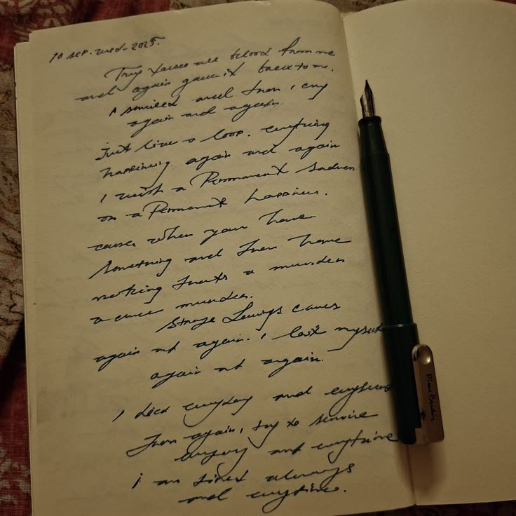
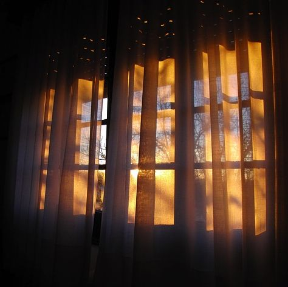

"Kuch lamhe us waqt bilkul aam lagte hain... magar waqt guzarne ke baad wahi yaadein dil ki sabse qeemti daulat ban jaati hain."

✦ Be-Khabar Lamhe ✦
Us raat Fahad ko neend der se aayi.
Bistar par lete hue kaafi waqt guzar chuka tha.
Kamre ki batti band thi aur bahar se aati halki roshni parde ke kinare se andar gir rahi thi. Ghar mein sab so chuke the. Kabhi kabhi door se kisi gaadi ke guzrne ki awaaz aati aur phir kamra dobara apni khamoshi mein laut jaata.
Fahad ne ek baar aankhen band ki.
Phir khol di.
Karwat badli.
Takiya thoda sa theek kiya.
Phir seedha chhat ki taraf dekhne laga.
Neend nahi aa rahi thi.
Ajeeb baat thi.
Din bhi koi khaas nahi guzra tha.
Kaam bhi roz ki tarah tha.
Sab kuch bilkul aam.
Lekin uske andar jaise kuch aam nahi raha tha.
Jab bhi aankhen band karta...
Aamina ka naam uske zehan mein goonj uthta.
Woh khud ko samjhane ki koshish karta.
"Bas... so ja."
Kuch seconds tak aankhen band rehti.
Phir wahi khayal.
Aakhir usne ek gehri saans li aur bistar par se uth kar baith gaya.
Kuch der chup-chaap saamne dekhta raha.
Phir haath badhakar mobile uthaya.
Screen on hote hi kamre ka andhera ek pal ke liye halka pad gaya.
Usne waqt dekha.
Kaafi raat ho chuki thi.
Phir bhi neend ka koi naam-o-nishaan nahi tha.
Usne mobile wapas rakhne ke bajaye WhatsApp khol liya.
Kyun khola...
Use khud nahi pata tha.
Kisi ko message nahi karna tha.
Kisi ke message ka intezar bhi nahi tha.
Bas yunhi.
Be-maqsad.
Chats ki list saamne aa gayi.
Uski ungli screen par dheere dheere chalne lagi.
Ek chat...
Phir doosri...
Kuch purane messages...
Kuch naye.
Kabhi kisi group ka notification dekhta.
Kabhi kisi purani conversation par nazar padti.
Phir bina padhe aage badh jaata.
Jaise woh kisi ko dhoondh nahi raha tha...
Bas apne zehan se bachne ki koshish kar raha tha.
Lekin insaan aksar jis cheez se bachna chahta hai...
Wahi cheez uske saamne aa jaati hai.
Achanak uski ungli ruk gayi.
Screen par ek naam tha.
Aamina.
Fahad kuch lamhon tak us naam ko dekhta raha.
Usne chat foran nahi kholi.
Bas naam dekhta raha.
Pata nahi kyun.
Jaise ek chhota sa naam achanak poori raat ka wazan apne andar samet kar khada ho.
Phir usne dheere se chat khol di.
Conversation chhoti thi.
Sirf chand paighaam.
Na koi lambi baat.
Na koi khaas guftagu.
Bas kaam se judi kuch baatein.
Kuch chhote jawab.
Kuch seedhe lafz.
Fahad screen ko upar se neeche tak dekhta raha.
Ek message par uski nazar thodi der ke liye ruk gayi.
Phir doosre par.
Usne chat ko dobara padha.
Jaise pehli baar jo lafz padhe the...
Ab unhi lafzon mein kuch aur dhoondh raha ho.
Uske chehre par halki si muskurahat aayi.
Phir khud hi khatam ho gayi.
Mobile ki roshni ab bhi uske chehre par pad rahi thi.
Kamra waise hi khamosh tha.
Lekin Fahad ke zehan mein ab khamoshi nahi thi.
Uske saamne woh chand messages nahi the...
Balki un messages se judi hui kuch purani tasveerein thi.
Office ka woh kona...
Computer screens...
Kaam ke darmiyan chhoti chhoti baatein...
Aamina ka kisi baat par sirf "Ji" keh dena...
Aur phir bina kisi aur baat ke dobara apne kaam mein lag jaana.
Sab kuch kitna aam tha.
Us waqt shayad usne inmein se kisi cheez ko yaad rakhne layak bhi nahi samjha tha.
Lekin aaj...
Wahi chhoti chhoti baatein uske zehan mein ek ek karke laut rahi thi.
Fahad ne mobile neeche kar diya.
Kuch der tak use apne haath mein hi pakde rakha.
Phir dheere se screen band kar di.
Andhera dobara kamre mein utar aaya.
Woh bistar par let gaya.
Lekin ab neend aur bhi door thi.
Kyunki kuch yaadein aisi hoti hain...
Jo yaad karne se nahi aati.
Bas ek naam kaafi hota hai.
Aur phir woh khud chal kar saamne aa jaati hain.
Fahad ne aankhen band ki.
Aur uska zehan...
Kuch mahine peechhe chala gaya.
Yeh un dino ki baat thi...
Jab Fahad ki badi behan ka nikah tay hua tha.

✦ Khamosh Aangan ✦
Ghar ka mahaul achanak badal gaya tha.
Jo ghar roz apni wahi routine mein chalta tha, aaj har kone mein kisi na kisi kaam ki awaaz sunai deti.
Kabhi drawing room mein rishtedaaron ki baat chal rahi hoti...
Kabhi kisi ko phone kiya ja raha hota...
Kabhi shaadi ke kapdon ka zikr hota...
Aur kabhi kisi cheez ki list dobara banayi ja rahi hoti.
Maa subah se kisi na kisi kaam mein lagi rehti.
Chhoti behan kabhi shopping ki list lekar baithti...
Kabhi kisi cheez ki tasveer dikha kar poochti,
"Ye kaisa rahega?"
Aur Fahad...
Uske liye to jaise ghar ka har kaam zaroori tha.
Kabhi kisi ko market lekar jaana...
Kabhi invitation cards lene jaana...
Kabhi kisi rishtedaar ko phone karna...
Kabhi shaadi ki kisi chhoti si zaroorat ko poora karna.
Shaadi ghar mein thi...
Lekin masroof sab the.
Aur un sab mein Fahad bhi kisi se kam nahi tha.
Shaadi se kuch din pehle usne office se chhutti le li thi.
Lekin chhutti shuru hone se pehle ek kaam abhi baqi tha.
Daawat dena.
Agli subah woh hamesha ki tarah office ke liye nikla.
Bas aaj uske haath mein roz ka office bag hi nahi tha.
Uske saath shaadi ke invitation cards ka ek chhota sa bundle bhi tha.
Office pahunchte hi usne apna kaam sambhala.
Lekin uske zehan mein ek aur kaam tha.
Aaj use sabko daawat deni thi.
Thodi der baad woh cards lekar ek ek desk ki taraf jaane laga.
Jahan koi milta...
Woh card uski taraf badha deta.
"Meri badi behan ka nikah hai."
"Aap zaroor tashreef laiyega."
Har baar yehi alfaaz.
Lekin har desk par jawab alag.
Koi foran mubarakbaad deta.
Koi card dekhkar muskurata.
Koi mazaak karne lagta.
"Sir, khana achha hona chahiye."
Fahad hans kar kehta,
"Khane ke liye aa rahe ho ya dua dene?"
Saamne se jawab aata,
"Sir, dono ka package hai."
Fahad bhi hans deta.
Kahin se awaaz aati,
"Hum sirf biryani ke liye aa rahe hain."
"Achha?"
Fahad hansi rok kar kehta,
"To phir card wapas karo."
"Sir, mazaak kar raha hoon."
Office ka mahaul dheere dheere hansi mazaak se bhar gaya.
Kuch der ke liye roz ka kaam, emails aur reports sab peeche reh gaye.
Har taraf se usse mubarakbaad mil rahi thi.
Kisi ke chehre par sachchi khushi thi...
Kisi ki baaton mein hamesha wali office ki shararat.
Fahad bhi har kisi ko muskura kar jawab deta raha.
Phir cards ka bundle haath mein liye woh apni team ki taraf badha.
Wahi team...
Jiska woh Team Leader tha.
Usne ek ek karke sabko card diya.
Kisi ne card khola.
Kisi ne bina khole hi mubarakbaad de di.
Kisi ne shaadi ki tareekh pooch li.
Fahad sabko jawab deta hua aage badhta raha.
Aur phir...
Uske kadam Aamina ki desk ke paas ruk gaye.
Aamina hamesha ki tarah apne kaam mein masroof thi.
Screen par nazar jami hui thi.
Uske saamne files khuli hui thi aur woh bina kisi jaldi ke apna kaam kar rahi thi.
Fahad ne ek pal ke liye use dekha.
Phir normal andaaz mein kaha,
"Assalamu Alaikum."
Aamina ne foran nazar uthayi.
"Wa Alaikum Assalam."
Fahad ne haath mein pakda hua card uski taraf badhaya.
"Meri badi behan ka nikah hai."
"Agar aap aa sakein to mujhe khushi hogi."
Aamina ne dono haathon se card liya.
Usne card ko palat kar dekha.
Phir saamne likhi tareekh par ek nazar dali.
Uske baad card sambhal kar apne paas rakhte hue narmi se boli,
"In Sha Allah... koshish karungi."
Fahad ne halka sa sir hila diya.
"Theek hai."
Bas.
Itni hi baat hui.
Na koi lambi guftagu...
Na koi khaas reaction.
Fahad agle desk ki taraf badh gaya.
Aamina ne bhi card apni desk par rakh diya...
Aur dobara apne computer screen ki taraf dekhne lagi.
Us waqt...
Na Fahad ne us lamhe ko yaad rakhne ki koshish ki.
Na Aamina ne.
Un dono ke liye woh bas ek aam si office ki subah thi.
Ek Team Leader...
Apni team ko apni behan ke nikah ki daawat de raha tha.
Aur ek employee...
Apne Team Leader ki daawat ka card apni desk par rakh rahi thi.
Bas itna hi.
✦ Solitary Moments ✦
Lekin zindagi ko shayad us waqt pata tha...
Ke kuch aam se lagne wale lamhe...
Baad mein yaadon ka sabse khoobsurat hissa ban jaate hain.
Do din baad...
Fahad ki chhutti shuru ho gayi.
Ghar mein mehmaan aana shuru ho gaye the.
Jo ghar kuch din pehle tak apni roz ki khamosh routine mein rehta tha...
Aaj wahan har waqt kisi na kisi ki awaaz sunai deti.
Kabhi drawing room se hansi ki awaaz aati...
Kabhi kitchen se bartanon ki.
Kabhi kisi rishtedaar ki awaaz door se sunai deti,
"Arre, ye samaan idhar rakh do."
Aur kabhi Maa kisi ko awaaz de rahi hoti.
Har taraf hansi thi...
Duaayein thi...
Aur ek ajeeb si khushi thi jo poore ghar mein phaili hui thi.
Fahad ke paas baithne ka waqt hi nahi tha.
Kabhi woh market bhaag raha hota.
Kisi cheez ki kami reh gayi...
To market.
Koi samaan hall pahunchana tha...
To hall.
Decorator ko kisi cheez ki zaroorat pad gayi...
To uske saath khada Fahad.
Kabhi phone kaan se laga hota.
"Ji, bhai... woh stage wala kaam ho gaya?"
Kabhi doosri taraf se catering wale ki call aa jaati.
"Kitne baje tak khana ready hoga?"
Aur kabhi ghar se phone aa jaata,
"Fahad, woh cheez lete aana."
"Ji, le aata hoon."
Phone rakhta...
Aur agle kaam ke liye nikal jaata.
Din kaise guzar raha tha...
Use khud bhi pata nahi chal raha tha.
Subah ghar se nikla tha...
Aur dekhte hi dekhte shaam ho jaati.
Phir raat.
Aur agle din dobara wahi bhaag-daud.
Kabhi kisi mehmaan ko lene jaana...
Kabhi kisi ko ghar tak chhodna...
Kabhi arrangements check karna.
Usse khud bhi yaad nahi tha...
Ke usne aakhri baar sukoon se baith kar chai kab pi thi.
Kabhi chai haath mein aati bhi...
To phone baj jaata.
Chai table par reh jaati...
Aur Fahad kisi aur kaam mein lag jaata.
Lekin itni bhaag-daud ke bawajood...
Uske chehre par thakan se zyada khushi thi.
Aakhir ghar ki badi beti ka nikah tha.
Aur woh bhi apni badi behan ka.
Woh din ka intezaar sab kar rahe the.
Phir...
Aakhir woh din bhi aa gaya.
Jiska sab intezaar kar rahe the.
Nikah ka din.
Shaam hote hi hall mehmaanon se bharna shuru ho gaya.
Subah se chal rahi bhaag-daud ab apne asal rang mein aa chuki thi.
Fahad kabhi hall ke darwaze par khada kisi mehmaan ka istiqbal karta...
Kabhi kisi ko andar bithata...
Kabhi kisi rishtedaar ko dhoondhne nikal jaata.
Qasim bhi subah se uske saath tha.
Kabhi stage ke paas khada arrangements dekh raha hota...
Kabhi mehmaanon ko unki jagah tak le jaata...
Aur jab Fahad kisi kaam mein ulajh jaata, to bina kahe uska bojh halka kar deta.
Dono ke beech zyada baat ki zaroorat bhi nahi padti thi.
Fahad bas ek taraf ishara karta...
Qasim samajh jaata.
"Main dekh raha hoon."
Aur woh kaam sambhal leta.
Isi dauran...
Fahad ki jeb mein rakha mobile vibrate hua.
Usne bheed ke beech ek taraf hat kar mobile nikala.
Screen par WhatsApp notification tha.
Aamina.
Message khola.
"Assalamu Alaikum."
"Hall ka exact location share kar dijiye."
Fahad ne foran location share kar di.
Phir sirf itna likha,
"Wa Alaikum Assalam."
"Yeh location hai."
"Aaram se aa jaiyega."
Message bhejne ke baad usne mobile wapas jeb mein rakh liya.
Aur phir woh dobara mehmaanon ke darmiyan masroof ho gaya.
Kuch der baad...
Hall ke darwaze ki taraf se do khawateen andar daakhil hui.
Dono parde mein thi.
Fahad ki nazar anjaane mein udhar chali gayi.
Unmein se ek...
Aamina thi.
Aur doosri uski badi behan.
Dono khamoshi se hall ke andar aa rahi thi.
Aur Fahad...
Mehmaanon ke beech khada bas unki taraf dekhta reh gaya.
Aamina ke haath mein ek khoobsurat sa gift tha.
Fahad ne unhe dekhte hi aage badh kar unka istiqbal kiya.
"Assalamu Alaikum."
"Wa Alaikum Assalam."
✦ Nayi Subah ✦
"Aaiye..."
"Khush aamdeed."
Aamina ne halka sa sir jhukaya.
Fahad ne unke liye hall ke andar baithne ka intezam karwa diya.
Uske paas rukne ka waqt nahi tha.
Hall mein mehmaan lagataar aa rahe the.
Koi use awaaz de raha tha...
Kisi ko kisi cheez ki zaroorat thi...
Aur kahin se Qasim kisi kaam ke liye use bula raha tha.
Fahad dobara mehmaanon ke istiqbal mein masroof ho gaya.
Kuch der baad...
Aamina aur uski badi behan stage ki taraf badhin.
Dulhan ke paas pahunch kar dono ne use mubarakbaad di.